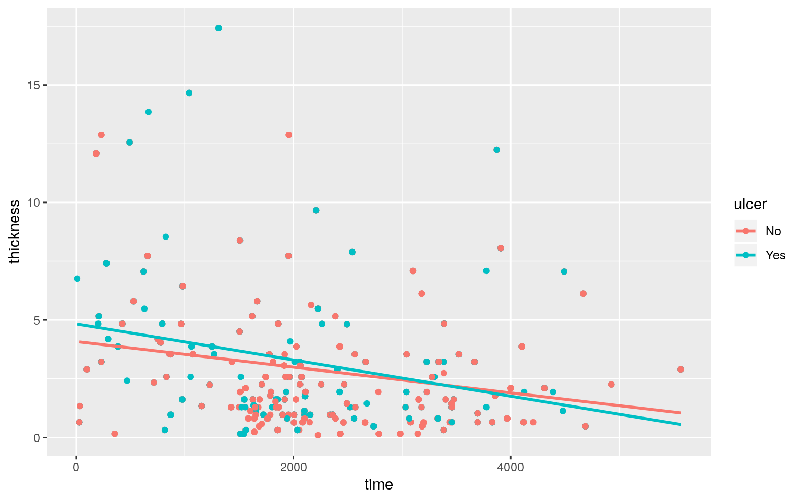
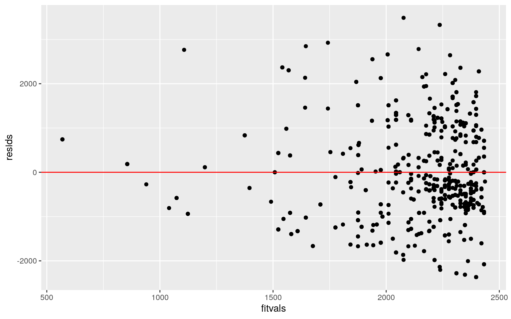
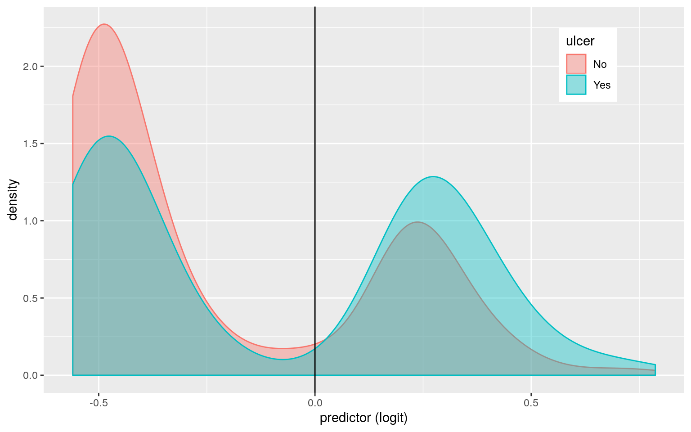

May 2, 2020
Quang Nguyen UTEID: qnn97
This is an R Markdown document. Markdown is a simple formatting syntax for authoring HTML, PDF, and MS Word documents. For more details on using R Markdown see http://rmarkdown.rstudio.com.
When you click the Knit button a document will be generated that includes both content as well as the output of any embedded R code chunks within the document. You can embed an R code chunk like this:
Introduction:
The dataset consist of the measurements on the patients with malignant melanoma. The data was collected in the patients who had their tumour removed surgically at the Department of Plastic Surgery, University Hospital of Odense, Denmark from 1962 to 1977. The data included 205 observations and 7 variebles in which 4 of them (age, time, thickness and year) are numeric varieble and 3 of them (sex, status, ulcer) are categorical varieble.
In this project, the relationship between time, ulcer, thickness, sex will be discovered following the result of the Project 1. According to that, ulceration of tumor, thickness of tumor are expected to be a good prediction for the time that patient can live after the operation. Formal statistical test in this project would provide the inside to the relationship between these variebles.
These dataset was taken because I am interested in medicine and cancer in particular. Melanoma is popular known as skin cancer. Even though it is not a popular cancer type, it can be very deadly because it can spread to other organs rapidly if it is not discovered and treated properly.
# Prepare dataset:
library(boot)
project2 <- melanoma
library(dplyr)
library(tidyr)
library(tidyverse)
# Made two dataset and then join
project2_1 <- project2 %>% dplyr::select(age, time, thickness,
year) %>% group_by(age)
project2_2 <- project2 %>% dplyr::select(age, sex, ulcer, status) %>%
group_by(age)
project2_2$sex <- recode(project2_2$sex, `0` = "female", `1` = "male")
# Change 1,2,3 to the status of patient after operation.
project2_2$status[project2_2$status == 1] <- "died from melanoma"
project2_2$status[project2_2$status == 2] <- "alive"
project2_2$status[project2_2$status == 3] <- "died from other causes"
# join
project2_join <- project2_2 %>% full_join(project2_1)
head(project2_join)## # A tibble: 6 x 7
## # Groups: age [2]
## age sex ulcer status time thickness year
## <dbl> <chr> <dbl> <chr> <dbl> <dbl> <dbl>
## 1 76 male 1 died from other causes 10 6.76 1972
## 2 76 male 1 died from other causes 1525 1.29 1970
## 3 56 male 0 died from other causes 30 0.65 1968
## 4 56 male 0 died from other causes 833 2.58 1971
## 5 56 male 0 died from other causes 1156 1.34 1970
## 6 56 male 0 died from other causes 1506 4.51 1970Talk a a bit about data preparation. how does it matter in the following tests.
# MANOVA
man1 <- manova(cbind(time, thickness, age) ~ status, data = project2_join)
summary(man1)## Df Pillai approx F num Df den Df Pr(>F)
## status 2 0.039742 5.9672 6 1766 3.47e-06 ***
## Residuals 884
## ---
## Signif. codes: 0 '***' 0.001 '**' 0.01 '*' 0.05 '.' 0.1 ' ' 1# Get univariate ANOVAs from MANOVA object
summary.aov(man1)## Response time :
## Df Sum Sq Mean Sq F value Pr(>F)
## status 2 18429524 9214762 7.6184 0.0005243 ***
## Residuals 884 1069231266 1209538
## ---
## Signif. codes: 0 '***' 0.001 '**' 0.01 '*' 0.05 '.' 0.1 ' ' 1
##
## Response thickness :
## Df Sum Sq Mean Sq F value Pr(>F)
## status 2 23.9 11.9623 1.2999 0.2731
## Residuals 884 8134.8 9.2023
##
## Response age :
## Df Sum Sq Mean Sq F value Pr(>F)
## status 2 4208 2104.20 13.716 1.36e-06 ***
## Residuals 884 135613 153.41
## ---
## Signif. codes: 0 '***' 0.001 '**' 0.01 '*' 0.05 '.' 0.1 ' ' 1# Mean in time and age across three status of patients
project2_join %>% group_by(status) %>% summarize(mean(time),
mean(age))## # A tibble: 3 x 3
## status `mean(time)` `mean(age)`
## <chr> <dbl> <dbl>
## 1 alive 2256. 53.1
## 2 died from melanoma 1965. 56.0
## 3 died from other causes 1926. 60.9# Post-hoc test to find which group differs:
pairwise.t.test(project2_join$time, project2_join$status, p.adj = "none")##
## Pairwise comparisons using t tests with pooled SD
##
## data: project2_join$time and project2_join$status
##
## alive died from melanoma
## died from melanoma 0.00043 -
## died from other causes 0.02429 0.80372
##
## P value adjustment method: nonepairwise.t.test(project2_join$age, project2_join$status, p.adj = "none")##
## Pairwise comparisons using t tests with pooled SD
##
## data: project2_join$age and project2_join$status
##
## alive died from melanoma
## died from melanoma 0.0020 -
## died from other causes 2.9e-06 0.0051
##
## P value adjustment method: noneIn total, 1 MANOVA, 3 ANOVA and 6 t-tests were performed (each of two DVs for each of three status group).
Because the p-value for MANOVA is much less than 0.05 the overall MANOVA is significant so, for at least one testing DVs (time,thickness,age), there is at least one “status” mean is different. Therefore, follow-up univariate ANOVAs was done on each variable.
According to the ANOVA test on each individual DVs, there are only age and time shows mean different across “status” group significantly while the thickness varieble does not (p>0.001).
Post hoc t-tests was done and to find what status is different from the others base on DVs age and time which shows significant mean different across “status” group. For “time” DV, only “alive” group show the difference to “died from melanoma” group because p value = 0.00043 < 0.05. Considering “age”, all three groups shows the difference for each others because there p-value are all less than 0.05.
The probability of at least one type I error is 1-0.95^10= 0.401. The Bonferroni correction α = 0.05/10 tests = 0.005 instead of 0.05 to keep the Type I error rate at 5%. As a result, the conclusion for “time” DV still hold while “died from melanoma” and “died from other causes” are no longer significantly different when consider “age” DV.
For the initial assumption, only three out of nine of status group pairs (three pairs were compared for each DV) were found to differ significantly from the others in terms of thickness, age and time => the alternate hyposthesis (Ha) is validated by the tests.
# Randomization test:
set.seed(348)
diffs <- vector()
for (i in 1:5000) {
timediff <- data.frame(time = sample(project2_join$time),
sex = project2_join$sex)
diffs[i] <- mean(timediff[timediff$sex == "female", ]$time) -
mean(timediff[timediff$sex == "male", ]$time)
}
# Actual mean difference of living time between two sex
project2_join %>% group_by(sex) %>% summarise(means = mean(time)) %>%
summarise(`mean_diff:` = diff(means))## # A tibble: 1 x 1
## `mean_diff:`
## <dbl>
## 1 -64.9# Two-tailed p-value
mean(diffs > 64.94425 | diffs < -64.94425)## [1] 0.4046# Visualized plot
{
hist(diffs, main = "Randomization test plot", ylab = "Day lives")
abline(v = -64.94425, col = "red")
}#Randomization test was performed to test the association between sex vs time by looking at the mean difference in living time after treatment. This is done to test whether the actual mean difference is due to chance by breaking the association. H0 is mean difference living time between two sex is the same|| Ha is mean difference living time between two sex is not the same. #The two tail p-value is calculated probability of mean diffs that are less or greater than the actual mean difference. The result is 0.3902 which is greater than 0.05 => there is evidence shows that null hypothesis is correct and the living time between two sex are similar. #The plot shows the distribution of mean difference in living time dur to chance in the sramble data. The red line indicates the actual mean difference.
library(tidyverse)
library(lmtest)
project2_join$ulcer <- recode(project2_join$ulcer, `0` = "No",
`1` = "Yes")
# Linear regression model
fit <- lm(time ~ ulcer * thickness, data = project2_join)
summary(fit)##
## Call:
## lm(formula = time ~ ulcer * thickness, data = project2_join)
##
## Residuals:
## Min 1Q Median 3Q Max
## -2367.4 -722.3 -210.1 824.9 3488.2
##
## Coefficients:
## Estimate Std. Error t value Pr(>|t|)
## (Intercept) 2443.89 67.88 36.001 < 2e-16 ***
## ulcerYes -65.94 103.03 -0.640 0.522
## thickness -71.48 16.40 -4.360 1.45e-05 ***
## ulcerYes:thickness -32.36 23.83 -1.358 0.175
## ---
## Signif. codes: 0 '***' 0.001 '**' 0.01 '*' 0.05 '.' 0.1 ' ' 1
##
## Residual standard error: 1072 on 883 degrees of freedom
## Multiple R-squared: 0.06638, Adjusted R-squared: 0.06321
## F-statistic: 20.93 on 3 and 883 DF, p-value: 4.2e-13coef(fit)## (Intercept) ulcerYes thickness ulcerYes:thickness
## 2443.89482 -65.94442 -71.48434 -32.35959# Test for linearity, normality, and homoskedasticity
ggplot(project2_join, aes(time, thickness, color = ulcer)) +
geom_point() + geom_smooth(method = "lm", se = F)
# Breuch-Pagan test for homoskedasticity
library(sandwich)
library(lmtest)
bptest(fit)##
## studentized Breusch-Pagan test
##
## data: fit
## BP = 9.0471, df = 3, p-value = 0.02867# linearlity
resids <- fit$residuals
fitvals <- fit$fitted.values
ggplot() + geom_point(aes(fitvals, resids)) + geom_hline(yintercept = 0,
color = "red")
# Normality
ggplot() + geom_histogram(aes(resids), bins = 20)
ggplot() + geom_qq(aes(sample = resids)) + geom_qq_line(aes(sample = resids),
color = "red")# Uncorrected vs corrected SE
summary(fit)$coef[, 1:2]## Estimate Std. Error
## (Intercept) 2443.89482 67.88318
## ulcerYes -65.94442 103.03383
## thickness -71.48434 16.39532
## ulcerYes:thickness -32.35959 23.83207coeftest(fit, vcov = vcovHC(fit))[, 1:2]## Estimate Std. Error
## (Intercept) 2443.89482 63.71476
## ulcerYes -65.94442 96.79161
## thickness -71.48434 17.66019
## ulcerYes:thickness -32.35959 23.85165Multiple regression is performed to test whether there a difference in time living regarding thickness of tumor and present of ulceration. H0:Controlling for thickness, ulcer status does not explain variation in living time || H0: Controlling for ulcer status, thickness of tumor does not explain variation in living time.
For the intercept, the living time is predicted to be 2443.89 day when controls for both thickness and ulcer status. This is the baseline.
Controlling for ulcer status, there is a significant effect of thickness of tumor on living time (p<0.001) that for every one unit increase in tumor thickness, living time decreases -71.48 unit on average. However, after controlling for thickness there is no difference in living time between ulcer and non-ulcer patient (p>0.001). For ulceryes:thickness interaction, if the living time increase by 1 unit, the ulceration and thickmess of tumor would decrease -32.36.
According to the regression plot and the Breusch-Pagan test, homoskedasticity is not met because the points fan out as going up the line. Breuch-Pagan test was performed and has p-value is 0.02867 < 0.05 so the null hypothesis (homoskedasticity) is rejected. On the other hand, by using graphing method, linearity and normality assumption is met for this regression.
After doing the corrected SE, there are small changes in SE of thickness and its interaction with ulceration. There is significant changes in value of SE of the intercept and ulceryes.
# Rerun same regression model with computation of
# bootstrapped standard errors.
boot_project <- sample_frac(project2_join, replace = T)
# repeat 5000 times
samp_distn <- replicate(5000, {
boot_project <- sample_frac(project2_join, replace = T)
fit <- lm(time ~ ulcer * thickness, data = boot_project)
coef(fit)
})
samp_distn %>% t %>% as.data.frame %>% summarize_all(sd)## (Intercept) ulcerYes thickness ulcerYes:thickness
## 1 58.09859 94.74992 16.33589 23.11259Similar to the comparision between corrected SE vs uncorrected SE, there are small changes in SE of thickness and its interaction with ulceration while there is significant changes in value of SE of the intercept and ulceryes.
# Logistic regression predicting a binary categorical
# variable from explanatory variable
project2_join <- project2_join %>% mutate(y = ifelse(ulcer ==
"Yes", 1, 0))
head(project2_join)## # A tibble: 6 x 8
## # Groups: age [2]
## age sex ulcer status time thickness year y
## <dbl> <chr> <chr> <chr> <dbl> <dbl> <dbl> <dbl>
## 1 76 male Yes died from other causes 10 6.76 1972 1
## 2 76 male Yes died from other causes 1525 1.29 1970 1
## 3 56 male No died from other causes 30 0.65 1968 0
## 4 56 male No died from other causes 833 2.58 1971 0
## 5 56 male No died from other causes 1156 1.34 1970 0
## 6 56 male No died from other causes 1506 4.51 1970 0fit <- lm(y ~ sex + thickness, data = project2_join, family = binomial)
coeftest(fit)##
## t test of coefficients:
##
## Estimate Std. Error t value Pr(>|t|)
## (Intercept) 0.3620695 0.0264125 13.7083 < 2.2e-16 ***
## sexmale 0.1806631 0.0340006 5.3135 1.362e-07 ***
## thickness 0.0101674 0.0054319 1.8718 0.06156 .
## ---
## Signif. codes: 0 '***' 0.001 '**' 0.01 '*' 0.05 '.' 0.1 ' ' 1exp(coef(fit))## (Intercept) sexmale thickness
## 1.436299 1.198012 1.010219# Confusion matrix
probs <- predict(fit, type = "response")
table(predict = as.numeric(probs > 0.5), truth = project2_join$y) %>%
addmargins## truth
## predict 0 1 Sum
## 0 333 210 543
## 1 145 199 344
## Sum 478 409 887# Density plot of log-odds
fit <- glm(y ~ sex + thickness, data = project2_join, family = binomial)
project2_join$logit <- predict(fit, type = "link")
project2_join %>% ggplot() + geom_density(aes(logit, color = ulcer,
fill = ulcer), alpha = 0.4) + theme(legend.position = c(0.85,
0.85)) + geom_vline(xintercept = 0) + xlab("predictor (logit)")
# ROC curve and AUC
library(plotROC)
ROCplot <- ggplot(project2_join) + geom_roc(aes(d = y, m = probs),
n.cuts = 0)
ROCplotcalc_auc(ROCplot)## PANEL group AUC
## 1 1 -1 0.6099963# 10 fold CV
class_diag <- function(probs, truth) {
tab <- table(factor(probs > 0.5, levels = c("FALSE", "TRUE")),
truth)
acc = sum(diag(tab))/sum(tab)
sens = tab[2, 2]/colSums(tab)[2]
spec = tab[1, 1]/colSums(tab)[1]
ppv = tab[2, 2]/rowSums(tab)[2]
if (is.numeric(truth) == FALSE & is.logical(truth) == FALSE)
truth <- as.numeric(truth) - 1
# CALCULATE EXACT AUC
ord <- order(probs, decreasing = TRUE)
probs <- probs[ord]
truth <- truth[ord]
TPR = cumsum(truth)/max(1, sum(truth))
FPR = cumsum(!truth)/max(1, sum(!truth))
dup <- c(probs[-1] >= probs[-length(probs)], FALSE)
TPR <- c(0, TPR[!dup], 1)
FPR <- c(0, FPR[!dup], 1)
n <- length(TPR)
auc <- sum(((TPR[-1] + TPR[-n])/2) * (FPR[-1] - FPR[-n]))
data.frame(acc, sens, spec, ppv, auc)
}
class_diag(probs, project2_join$y)## acc sens spec ppv auc
## 1 0.5997745 0.4865526 0.6966527 0.5784884 0.6099963set.seed(1234)
k = 10
data <- project2_join[sample(nrow(project2_join)), ] #put dataset in random order
folds <- cut(seq(1:nrow(project2_join)), breaks = k, labels = F) #create folds
diags <- NULL
for (i in 1:k) {
# FOR EACH OF 10 FOLDS
train <- data[folds != i, ] # CREATE TRAINING SET
test <- data[folds == i, ] # CREATE TESTING SET
truth <- test$y
fit <- glm(y ~ sex + thickness, data = train, family = binomial)
probs <- predict(fit, newdata = test, type = "response")
diags <- rbind(diags, class_diag(probs, truth)) #CV DIAGNOSTICS FOR EACH FOLD
}
summarize_all(diags, mean)## acc sens spec ppv auc
## 1 0.5873979 0.4754651 0.6789626 0.5583456 0.611322Intercept: odd of ulceration of sex female when control for thickness is 1.436
Control for thickness, the ulceration rate between male and female is significant different. By looking at the odd ratio, the coeficient for sexmale is 1.19 which odd of ulceration for male is 1.195 times higher compared to female.
Controlling for sex, for every one unit increase in thickness, odd of ulceration increase by the factor of 1.0102 (not significant bc p=0.06>0.05).
Accuracy is (333+199)/887= 0.599 proportion of correctly classified cases (including true positive and true negative)
Sensitivity = 119/409 = 0.267 is true positive rate which is the probability of predicting 1 (ulcer) from sex and thickness is really 1.
Specificity = 333/478=0.696 is a true negative rate which is the probability of predicting non-ulcer patient from sex and thickness is really non-ulcer
Precision (PPV) = 199/344=0.578 is the is the proportion of patient who are classified having ulcer and actually do.
The ROCplot visualize the trade-off between sensitivity and specificity and AUC calculation quantified how well we are predicting ulcer from sex and thickness. AUC is 0.6099 which mean the model does a poor job in predicting the ulcer varieble from sex and tumor thickness.
Average out-of-sample Accuracy, Sensitivity, and Recall is 0.5997574, 0.4840078, 0.693595 respectively. Compared with the statistic data that was calculated from the confusion matrix, the statistic data from the 10 fold CV is very similar except for the sensitivity (0.267 vs 0.484).
# LASSO regression
head(project2_join)## # A tibble: 6 x 9
## # Groups: age [2]
## age sex ulcer status time thickness year y logit
## <dbl> <chr> <chr> <chr> <dbl> <dbl> <dbl> <dbl> <dbl>
## 1 76 male Yes died from other causes 10 6.76 1972 1 0.455
## 2 76 male Yes died from other causes 1525 1.29 1970 1 0.224
## 3 56 male No died from other causes 30 0.65 1968 0 0.197
## 4 56 male No died from other causes 833 2.58 1971 0 0.279
## 5 56 male No died from other causes 1156 1.34 1970 0 0.227
## 6 56 male No died from other causes 1506 4.51 1970 0 0.360library(glmnet)
y <- as.matrix(project2_join$time)
x <- model.matrix(y ~ (.), data = project2_join)[, -1]
head(x)## age sexmale ulcerYes statusdied from melanoma statusdied from other causes
## 1 76 1 1 0 1
## 2 76 1 1 0 1
## 3 56 1 0 0 1
## 4 56 1 0 0 1
## 5 56 1 0 0 1
## 6 56 1 0 0 1
## time thickness year logit
## 1 10 6.76 1972 0.4545531
## 2 1525 1.29 1970 0.2244173
## 3 30 0.65 1968 0.1974910
## 4 833 2.58 1971 0.2786906
## 5 1156 1.34 1970 0.2265209
## 6 1506 4.51 1970 0.3598903cv <- cv.glmnet(x, y)
lasso <- glmnet(x, y, lambda = cv$lambda.1se)
coef(lasso)## 10 x 1 sparse Matrix of class "dgCMatrix"
## s0
## (Intercept) 68.6792125
## age .
## sexmale .
## ulcerYes .
## statusdied from melanoma .
## statusdied from other causes .
## time 0.9680073
## thickness .
## year .
## logit .set.seed(1234)
k = 10
data <- project2_join %>% sample_frac
folds <- ntile(1:nrow(project2_join), n = 10)
diags <- NULL
for (i in 1:k) {
train <- data[folds != i, ]
test <- data[folds == i, ]
truth <- test$y
fit <- glm(y ~ time, data = train, family = "binomial")
probs <- predict(fit, newdata = test, type = "response")
diags <- rbind(diags, class_diag(probs, truth))
}
diags %>% summarize_all(mean)## acc sens spec ppv auc
## 1 0.5612615 0.2246884 0.8549273 0.5555998 0.5321305Lasso Regression was done to select predictable varieble and prevent overfitting to enhance prediction accuracy. The varieble time are the most predictive y/ulcer variables!
Compared to the 10 fold in previous question (y~sex, thickness), the statistic data of this LASSO 10 fold CV is worse. It is a strange scenerio because the 10 fold after LASSO regression is supposed to provide a better AUC statistic because time is predicted to have the best predicted varieble by LASSO
## R version 3.4.4 (2018-03-15)
## Platform: x86_64-pc-linux-gnu (64-bit)
## Running under: Ubuntu 18.04.4 LTS
##
## Matrix products: default
## BLAS: /usr/lib/x86_64-linux-gnu/openblas/libblas.so.3
## LAPACK: /usr/lib/x86_64-linux-gnu/libopenblasp-r0.2.20.so
##
## locale:
## [1] LC_CTYPE=en_US.UTF-8 LC_NUMERIC=C
## [3] LC_TIME=en_US.UTF-8 LC_COLLATE=en_US.UTF-8
## [5] LC_MONETARY=en_US.UTF-8 LC_MESSAGES=en_US.UTF-8
## [7] LC_PAPER=en_US.UTF-8 LC_NAME=C
## [9] LC_ADDRESS=C LC_TELEPHONE=C
## [11] LC_MEASUREMENT=en_US.UTF-8 LC_IDENTIFICATION=C
##
## attached base packages:
## [1] methods stats graphics grDevices utils datasets base
##
## other attached packages:
## [1] glmnet_2.0-16 foreach_1.4.4 Matrix_1.2-12 plotROC_2.2.1
## [5] sandwich_2.5-1 lmtest_0.9-37 zoo_1.8-6 forcats_0.4.0
## [9] stringr_1.4.0 purrr_0.3.3 readr_1.3.1 tibble_2.1.3
## [13] ggplot2_3.2.1 tidyverse_1.3.0 tidyr_1.0.0.9000 dplyr_0.8.3
## [17] boot_1.3-24 knitr_1.28
##
## loaded via a namespace (and not attached):
## [1] Rcpp_1.0.2 lubridate_1.7.4 lattice_0.20-35 assertthat_0.2.1
## [5] zeallot_0.1.0 digest_0.6.20 utf8_1.1.4 R6_2.4.0
## [9] cellranger_1.1.0 plyr_1.8.4 backports_1.1.4 reprex_0.3.0
## [13] evaluate_0.14 httr_1.4.1 blogdown_0.18 pillar_1.4.2
## [17] rlang_0.4.2 lazyeval_0.2.2 readxl_1.3.1 rstudioapi_0.10
## [21] rmarkdown_2.1 labeling_0.3 munsell_0.5.0 broom_0.5.2
## [25] compiler_3.4.4 modelr_0.1.5 xfun_0.13 pkgconfig_2.0.2
## [29] htmltools_0.3.6 tidyselect_0.2.5 bookdown_0.18 codetools_0.2-15
## [33] fansi_0.4.0 crayon_1.3.4 dbplyr_1.4.2 withr_2.1.2
## [37] grid_3.4.4 nlme_3.1-131 jsonlite_1.6 gtable_0.3.0
## [41] lifecycle_0.1.0 DBI_1.0.0 magrittr_1.5 formatR_1.7
## [45] scales_1.0.0 cli_1.1.0 stringi_1.4.3 fs_1.3.1
## [49] xml2_1.2.2 generics_0.0.2 vctrs_0.2.1 iterators_1.0.10
## [53] tools_3.4.4 glue_1.3.1 hms_0.5.3 yaml_2.2.0
## [57] colorspace_1.4-1 rvest_0.3.5 haven_2.2.0## [1] "2020-05-15 15:08:46 CDT"## sysname
## "Linux"
## release
## "4.15.0-99-generic"
## version
## "#100-Ubuntu SMP Wed Apr 22 20:32:56 UTC 2020"
## nodename
## "educcomp01.ccbb.utexas.edu"
## machine
## "x86_64"
## login
## "unknown"
## user
## "qnn97"
## effective_user
## "qnn97"